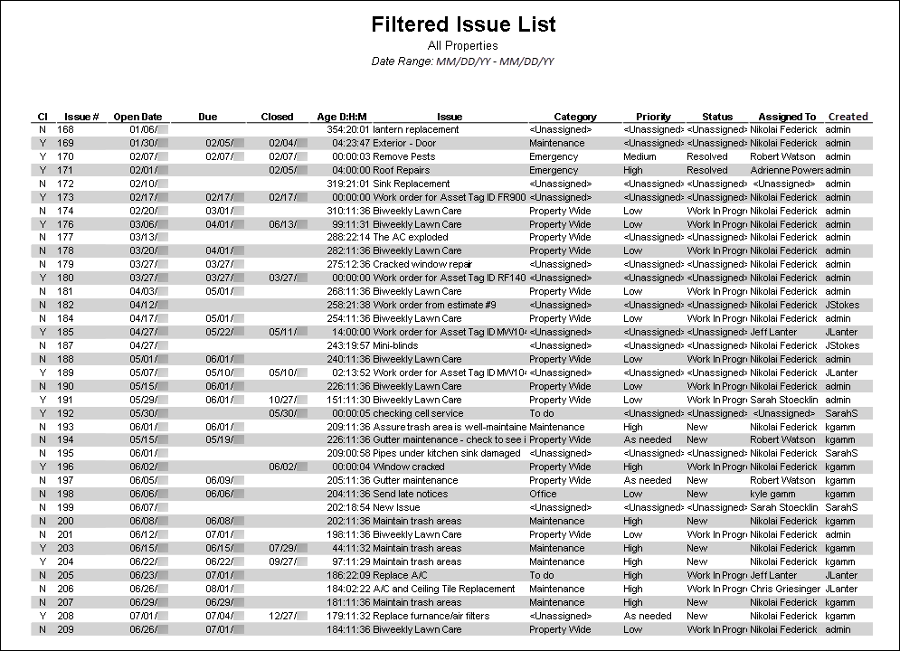
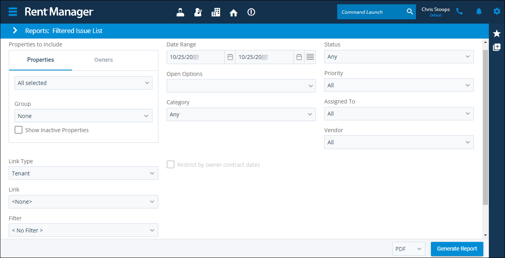

Source: https://rmxhelp.rentmanager.com/Topics/Express/Other/Reports/Filtered-Issue-List.htm
Filtered Issue List (Report)
The Filtered Issue List report displays information about service issues with an Open Date within a selected date range that match your filter criteria. The filters can be used in a variety of ways to determine what displays in the report. For example, the filters can be used to view only service issues categorized as maintenance or to display all service issues that are linked to a particular property or unit.
Related Privileges
| Group | Privilege | Column |
|---|---|---|
| Letter/Email Templates/Reports/Packets | Run reports | Enabled |
Additionally, on the Reports tab, you must have access to Filtered Issue List.
For more information, refer to Control User Access.
To view the Filtered Issue List report, do the following:
-
Go to
 arrow_forward Services arrow_forward Service Manager arrow_forward Filtered Issue List.
arrow_forward Services arrow_forward Service Manager arrow_forward Filtered Issue List.
The Reports: Filtered Issue List page displays. -
Adjust the report options as desired. Each option is described below.
-
Generate the report in your desired file format(s).

Report Options
The report options described below determine what data displays in the report.

More Information
When this report option is selected, reports generate only for owners with active ownerships. If all selected owners currently do not have active ownerships, an error message displays stating that no reports were generated.
For more information on establishing active ownerships, refer to Property Owners (Pop-Up).
Properties/Owners to Include
Check each property or owner to be included in the report. Alternatively, select a property or owner Group. When the Owners tab is selected, results generate only for owners with active ownerships. If all selected owners currently do not have active ownerships, and Restrict by owner contract dates is selected, an error message displays stating that no reports were generated. For more information on establishing active ownerships, refer to Property Owners (Pop-Up).
More Information
Only information related to the properties to which you have access displays. Your access to properties can be managed from your user account or on the property's details page. For more information, refer to Limit Access to a Property.
Optionally, check Show Inactive Properties to include properties that are no longer active.
Date Range
Enter or select the date range to determine the data that displays in the report.
In the Date Range section, set the From and To dates for which the report should examine data.
These fields automatically populate with today’s date. Enter a different date or select a date from the calendar. Alternatively, adjust the dates using the available preset buttons or click  to open more options for setting a date range.
to open more options for setting a date range.
Open Options
Check the options in this section to filter the report results to display Open Issues, Closed Issues, or All Issues.
Category
Select an issue category from the drop-down list to filter the report results so only issues assigned to the selected category display. For more information, refer to Issue Categories (Page).
To view only issues that have not been assigned a Category, select <Unassigned>. Alternatively, to include issues of all categories, select Any.
Status
Select an issue status from the drop-down list so only issues with the selected Status display. To view only issues that have not been assigned a status, select <Unassigned>. Alternatively, to include issues of all categories, select Any. For more information, refer to Issue Statuses (Page).
Priority
Select an issue priority from the drop-down list to display only issues with that priority in the report results. To view only service issues that have not been assigned a priority, select <Unassigned>. Alternatively, to include service issues of all priorities, select All. For more information, refer to Issue Priorities (Page).
Assigned To
Select a user to filter the report results so only service issues that are assigned to that user display.
To view only service issues that have not been assigned to a user, select <Unassigned>. Alternatively, to include service issues assigned to any user that match the other selected report options, select All.
Vendor
Select a vendor from the drop-down list. Only issues that are assigned to that vendor display in the report. To include only issues that have not been assigned a vendor, select <Unassigned>. Alternatively, to include service issues assigned to any vendor, select All.
Link Type
Select a type of service issue link (tenant, prospect, unit, or property) to filter the accounts that display in the Link drop-down.
Link
Select an entity of the selected Link Type so only issues that are linked to that entity display in the report results.
Filter
Select a Service Manager filter or system filter to display issues that match the filter in the report results. System filters are designated with brackets ([ ]) around the name of the filter.
Search
Enter a keyword to narrow the report results to match your search criteria.
For example, if you want to see issues pertaining to lawn care, enter lawn into the Search field to display only issues containing the word lawn in the report results.
Restrict by Owner Contract Dates
This option becomes available when the Owner tab is selected.

Check to display only data that is within the active contract dates for each of the selected owners, regardless of the date range. This option is useful if, for example, your contract with one owner is ending and another contract with a different owner is beginning.
| Option | Description |
|---|---|
|
Checked |
The report filters to display only data within the selected owner or owners' active contract. For example, if the report is generated for 01/01/2026–12/31/2026, and Owner A has an active contract from January to June of 2026, the report displays only data at the properties owned by Owner A from January 2026 to June 2026. |
|
Unchecked |
The report displays current data for any months included in the report date range regardless of owner contracts. |
Report Results
The report results are described below including, if applicable, section, column, and subreport or tab descriptions.
Report Header
The report header displays the report name and key information selected in the report options, such as date information and which properties were examined in the report.
Column Descriptions
The columns that display in the report are described below.
| Column | Description |
|---|---|
|
Cl |
Displays N if the issue is open and Y if the issue has the Close Date field checked on the issue. |
|
Issue # |
The system-generated number of the issue. |
|
Open Date |
The date and time entered in the Open Date field on the issue. This date may display as a future date if the Open Date field was manually changed. |
|
Due |
The date entered in the Due Date field of the issue. |
|
Closed |
For closed issues, the date and time entered in the Close Date field of the issue. |
|
Age D:H:M |
The amount of time that has elapsed since the issue was created displays in DD:HH:MM format. |
|
Issue |
The text entered in the Title field of the issue. |
|
Category |
The issue's designated Service Issue Category. |
|
Priority |
The issue's designated Service Issue Priority. |
|
Status |
The issue's designated Service Issue Status. |
|
Assigned To |
The Rent Manager user to whom the issue is currently assigned. |
|
Created By |
The Rent Manager user that created the issue. |